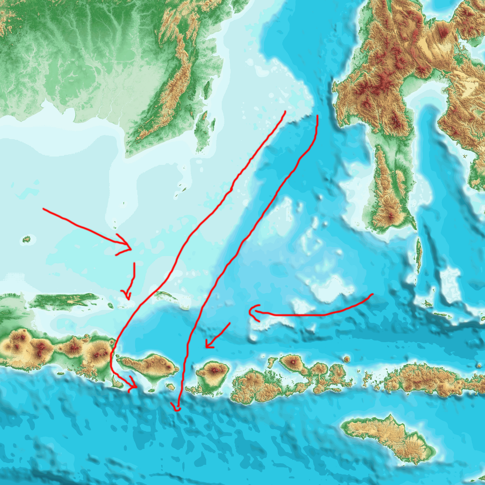

(1)

Pemandu GeoTrip :
Halo... assalamualaikum senang bisa berkenalan lagi nih..
Kalian bisa panggil saya Rusdi / Dian / Anto

"Bukan Sekedar Ngebolang Biasa"
Halo... assalamualaikum senang bisa berkenalan lagi nih..
Kalian bisa panggil saya Rusdi / Dian / Anto

Gambar 1 : Peta Administrasi Kec. Seririt
Seririt adalah sebuah kecamatan di kabupaten Buleleng, provinsi Bali, Indonesia. Kecamatan ini berjarak sekitar 21 Km dari Singaraja, ibu kota Kabupaten Buleleng ke arah barat. Pusat pemerintahannya berada di Kelurahan Seririt
Penduduk desa Seririt berjumlah 6.639 jiwa terdiri dari 3.276 laki-laki dan 3.363 perempuan dengan rasio sex 95

Gambar 2 : Patahan Belakang Flores & Zona Subduksi
Sejak dibukanya Jalan Tol Cipularang, kota Bandung telah menjadi tujuan utama dalam menikmati liburan akhir pekan terutama dari masyarakat yang berasal dari Jakarta sekitarnya. Selain menjadi kota wisata belanja, kota Bandung juga dikenal dengan sejumlah besar bangunan lama berarsitektur peninggalan Belanda.

Gambar 3 : Gejer Bali
22 November 1815 dengan perkiraan kekuatan gempa mencapai magnitudo (M) 7,5. Gempa bumi tahun 1815 ini masih tercatat menjadi yang terbesar dengan kerusakan serta korban jiwa terbanyak dibandingkan tiga gempa bumi berkekuatan besar lainnya pada 1917, 1976, dan 1979.
"Suatu wilayah yang memiliki riwayat gempa besar memiliki potensi besar untuk kembali terjadi" Daryono BMKG

Gambar 4 : Petunjuk Evakuasi
Gambar 5 : Peta Patahan Belakang Flores & Subduksi

Gambar 6 : Tsunami Seririt

Gambar 7 : Suar Peringatan Tsunami

Gambar 8 : Peta Zona Bahaya Tsunami Seririt
Peringatan Dini Tsunami Getaran gempa adalah peringatan untuk melakukan evakuasi. Jika anda merasakan gempa kuat dan lama segera tinggalkan zona bahaya, untuk kemudian mencari informasi dari televisi

Gambar 9 : Rambu Arah Evakuasi Tsunami

Gambar 10 : Peta Batimetri (Kontur Laut)
Gambar 11 : Arus Kuat Di Laut Bali